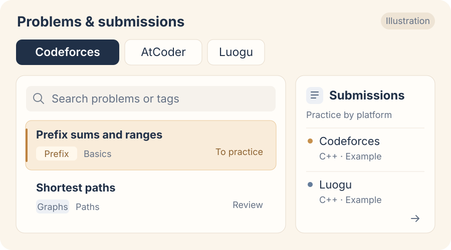
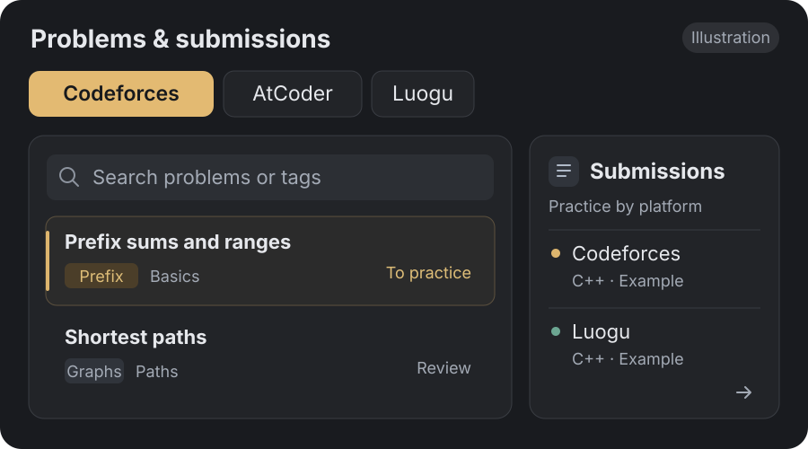
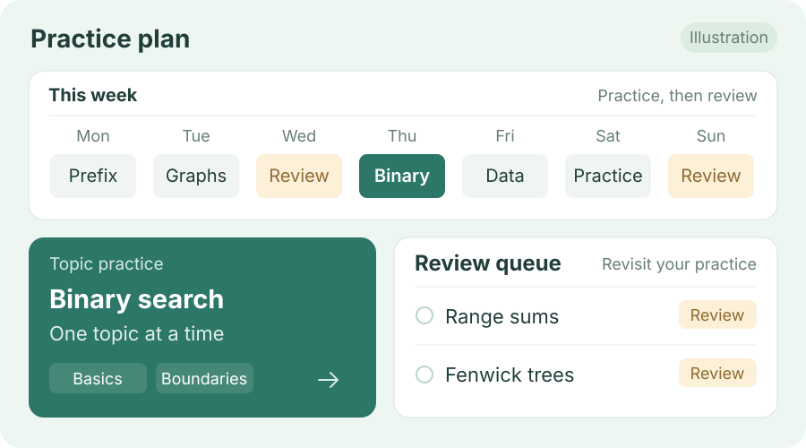
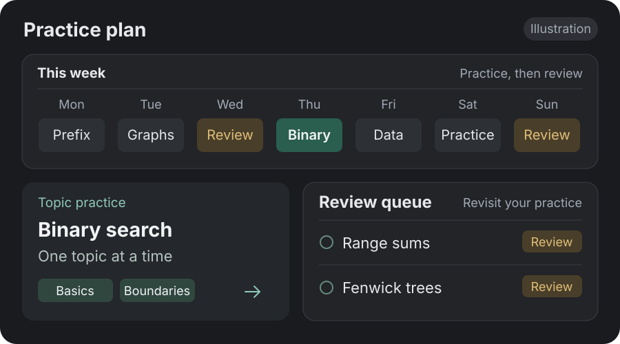

Problems and submissions
Browse and search problems by platform, with your submissions organized in one place.
Use topic tags to choose what to practice, then revisit the attempts in your records.



Browse problems, organize submissions, plan practice by topic, and return to problems you have already tried.
Browse and search problems by platform, with your submissions organized in one place.
Use topic tags to choose what to practice, then revisit the attempts in your records.


Practice related problems by topic, then revisit completed problems and reflect on your understanding.
Make room for both new practice and review in the same plan.

